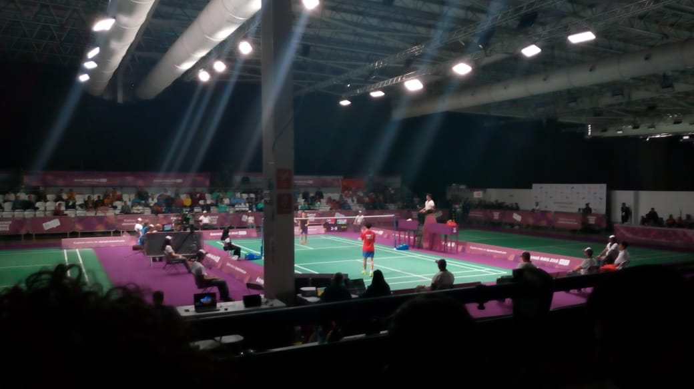

01 / Physical activity
Enjoy moving in different ways
A badminton session can involve walking, lunging, reaching, changing direction, and returning to a ready position. The demands vary widely: a relaxed beginner rally is different from a fast competitive match. Choose a pace that feels appropriate for you and build up gradually.
The World Health Organization (WHO) describes physical activity as movement that requires energy and notes that activity can take many forms and be adapted for different abilities. Playing a sport you enjoy can be one way to add movement to your routine.


02 / Health & wellbeing
Benefits are broader than the court
WHO reports that regular physical activity is associated with a range of health benefits. For adults, these include benefits related to cardiovascular health, type 2 diabetes risk, mental health, brain health, sleep, and overall wellbeing. For children and adolescents, activity supports physical fitness, bone health, healthy growth, and cognitive development.
04 / General activity guidance
Every bit of movement counts
WHO guidance for adults recommends a weekly amount of moderate or vigorous aerobic activity, alongside muscle-strengthening activity. The exact recommendation depends on age and circumstances, and the guidance is about total activity across the week—not a target that badminton alone must meet.
- Some activity is better than none; start where you are.
- Spread activity through the week in a way that suits you.
- Choose a level and pace appropriate to your age, ability, and health.
- Seek qualified health advice if you are unsure how to begin or adapt activity.
05 / Your first session
Keep the first step simple
Find a safe place to play, wear court-appropriate shoes, and begin with a gentle warm-up and easy rallies. You can learn the basic rules, build skills with a flexible practice plan, and read the safe-play guide before increasing your pace.
03 / Different ways to play
Find your kind of game
Play singles for a one-on-one challenge, doubles for a shared court, or practise a few shots with a friend. Club sessions can provide a regular place to learn and play. You do not need to be an expert to start; beginners can make the game gentler by taking breaks, using cooperative rallies, and keeping the pace comfortable.
Solo practice
Shadow footwork or work on a controlled serve at your own pace.
Partner practice
Cooperate on easy rallies and take turns feeding predictable shots.
Friendly games
Try short games, rotate partners, and agree on a comfortable intensity.
Club play
Meet other players and choose sessions suited to your experience.